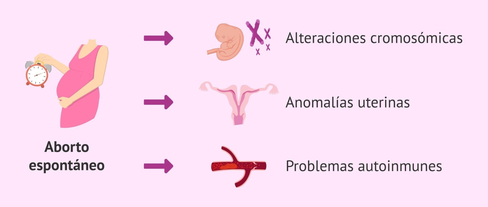
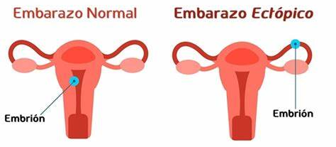
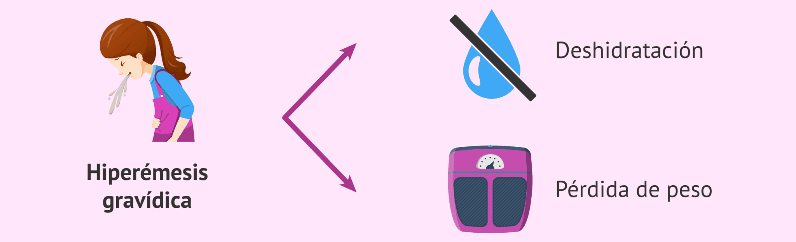

⚠️ ¿Cuáles son las complicaciones más frecuentes?
- El primer trimestre es una etapa crucial para el desarrollo del embarazo. Aunque la mayoría de las gestaciones avanzan sin problemas graves, existen algunas complicaciones que pueden presentarse y requieren atención oportuna. Conocerlas permite actuar rápidamente y buscar ayuda profesional si es necesario.
🚨 Aborto espontáneo

¿Qué es?
- Se trata de la pérdida del embarazo antes de la semana 12-13. Puede ocurrir de forma natural por alteraciones genéticas o problemas en el desarrollo embrionario.
¿Cómo se manifiesta?
- Sangrado vaginal (puede ser leve o abundante, rojo brillante o marrón).
- Dolor abdominal tipo cólico, parecido al de la menstruación.
- A veces, salida de coágulos o tejido.
¿Qué hacer?
- Acude de inmediato al centro de salud si presentas sangrado, dolor fuerte o expulsión de tejido.
- No automediques ni introduzcas nada en la vagina.
Recuerda: La mayoría de abortos espontáneos no pueden evitarse y no son culpa de la madre.
⚠️ Embarazo ectópico

¿Qué es?
- Es cuando el embarazo se implanta fuera del útero, generalmente en una trompa de Falopio. No puede evolucionar normalmente y puede poner en peligro la vida si no se detecta a tiempo.
¿Cómo se manifiesta?
- Sangrado vaginal leve o manchas.
- Dolor intenso en bajo vientre, a un lado del abdomen.
- Mareos, sudor frío o desmayo (en casos graves, por hemorragia interna).
¿Qué hacer?
- Busca atención médica urgente si presentas estos síntomas.
- No ignores el dolor intenso o persistente.
El diagnóstico precoz puede salvar tu vida. Ante síntomas sospechosos, acude sin demora.
🤢 Hiperémesis gravídica

¿Qué es?
- Se trata de náuseas y vómitos tan intensos que impiden alimentarse y pueden causar deshidratación o pérdida de peso.
¿Cómo se manifiesta?
- Náuseas y vómitos persistentes, especialmente en la mañana pero pueden ocurrir a cualquier hora.
- Pérdida de peso o incapacidad de retener líquidos y alimentos.
- Mareos, debilidad y signos de deshidratación.
¿Qué hacer?
- Si no puedes retener líquidos ni alimentos, o presentas mareos y debilidad, consulta de inmediato.
- El tratamiento médico puede requerir hidratación por vía intravenosa y control de síntomas.
No todas las náuseas son graves, pero cuando afectan tu vida diaria, busca apoyo médico.
🦠 Infecciones del tracto urinario
¿Qué es?
- Son infecciones que afectan la vejiga o las vías urinarias. Durante el embarazo, las mujeres son más propensas debido a los cambios hormonales y físicos.
¿Cómo se manifiesta?
- Ardor o dolor al orinar.
- Orina turbia, con olor fuerte o incluso con sangre.
- Dolor en la parte baja del abdomen y necesidad de orinar con mayor frecuencia
¿Qué hacer?
- Consulta rápidamente al médico ante cualquier síntoma, ya que las infecciones urinarias pueden complicarse durante el embarazo.
- Bebe suficiente agua y mantén una adecuada higiene íntima.
Si no se tratan a tiempo, pueden desencadenar complicaciones como infecciones más graves o parto prematuro.